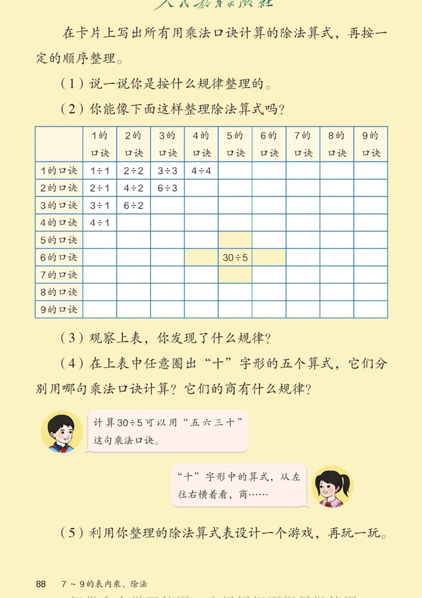

×
🔊 手机听不到声音怎么办？照这 3 步做
① 用
Edge 浏览器
打开
www.jeepsh.cn
（在微信里打开的点右上角「⋯ → 在浏览器打开」；没装 Edge 就到应用商店搜「Edge」安装）。
② 应用商店搜
「讯飞语记」
安装 → 打开它 →
通用设置 → 语音合成设置
→ 打开
「合成系统接口」
和
「全局生效」
两个开关 → 再选一个
中文发音人
。
③ 系统语言设为
简体中文
，点「
播放
」试听能说中文后，
彻底关闭浏览器再重开
（后台划掉），回到课件点读就有声音。
→ 打开声音自检
🔊 五、7~9 的表内乘、除法 · 课本第 88 页 · 整理和复习（除法算式表）
人教版《数学》二年级上册 · 有声图文带读 · 先想后看解析 · 按口诀整理除法 · 十字形找规律
题数
6
认知
2
强化
3
拓展
1
本页重点
除法算式整理表 · 十字形五个算式 · 发现商的规律
🎧 分两步学：
① 解析教材图片
——纯声音读图，读到哪一块哪一块闪动提示；关键处先倒计时让你思考，再在图片下方给出解析并朗读。
② 分层提问练习
——六道分层题（认知 / 强化 / 拓展），先思考再展开解析、朗读参考答案；这一步不再回到图片。
也可以随时点任意一句话、图上任意一块单独听；点课本文字卡还会展开答案。
教材图片（点块听读，读到哪块哪块闪）

📖 人教版《数学》二年级上册 · 课本第 88 页 · 图片仅供个人学习，版权归人民教育出版社所有
🤔 想一想（点我可跳过）
课本的文字（点句子：听读 + 看答案）
整理规律
表里的算式怎么排的？
看答案 ▾
行、列都按 1~9 的口诀排；
例子：二三得六 → 2 行 3 列写
6÷3
；
💡 按口诀整理，找算式又快又准。
十字形
五个算式各用哪句口诀？
看答案 ▾
24÷4=
6
（四六二十四）；
25÷5=
5
（五五二十五）；
30÷5=
6
（五六三十）；
35÷5=
7
（五七三十五）；
36÷6=
6
（六六三十六）。
商的规律
横看竖看有什么规律？
看答案 ▾
横着看：商都是
6
（24÷4、30÷5、36÷6）；
竖着看：商 5、6、7，
依次多 1
（被除数每次多 5）；
💡 被除数多几，商就有规律地变。
设计游戏
用算式表玩什么游戏？
看答案 ▾
翻卡片抢答：说出
口诀 + 商
就赢这张卡；
也可以你说商、我找算式；
💡 玩熟了，口诀就更牢了。
分层提问练习（先想后看解析）
➗
认知
30÷5 用哪句口诀？商是几？
看解析
🤔 想一想
怎么想的：
除数 5，就想
5 的口诀
，问「五几三十」，五六三十，商是 6。用口诀求商的窍门：
看除数，想口诀，缺谁谁就是商。
解析：
口诀：五六三十；
30÷5=
6
。
🔢
认知
25÷5 等于几？
看解析
🤔 想一想
怎么想的：
除数 5，想
5 的口诀
：五几二十五？五五二十五，商是 5。这题被除数和商都是 5，因为
两个乘数相同，交换后还是自己
。
解析：
口诀：五五二十五；
25÷5=
5
。
✝️
强化
十字形五个算式的商分别是多少？
看解析
🤔 想一想
怎么想的：
每道都先看除数再想口诀：24÷4 想四六二十四，25÷5 想五五二十五，30÷5 想五六三十，35÷5 想五七三十五，36÷6 想六六三十六。
解析：
25÷5=
5
；24÷4=6、30÷5=
6
、36÷6=6；
35÷5=
7
；
💡 十字形中心 30÷5
🔍
强化
竖着看十字形，商有什么规律？
看解析
🤔 想一想
怎么想的：
竖着比要
抓住不变的量
：除数都是 5，被除数 25、30、35 每次多 5，就正好多分出一份，所以商 5、6、7 每次只多 1。
解析：
商依次是 5、6、7，
每次多 1
；
被除数 25、30、35，每次多 5；
💡 每份5不变，总多5就多1份
↗️
强化
第 1 行 1÷1、2÷2、3÷3、4÷4 的商都是几？
看解析
🤔 想一想
怎么想的：
先看这些算式的特点：
被除数和除数一样大
。一个数分成和它个数同样多的份，每份只能是 1，所以商都是 1，不用一句句去想口诀。
解析：
商都是
1
；
被除数和除数相同，商就是 1。
🌈
拓展
为什么表格的右上部分是空的？
看解析
🤔 想一想
怎么想的：
想想这张表是按
小九九
排的：1×2 和 2×1 用的是同一句一二得二，对应的除法只需记一次，另一半就空着了。空格正是大九九要补的地方。
解析：
小九九里 1×2 和 2×1 是
同一句口诀
；
对应的除法只需记一次，右上就空着；
🌈 空格正是小九九变大九九要补的地方
① 解析教材图片
② 分层提问练习
⏹ 停止
纯声音 + 高亮跟随 · 想好才出解析
← 返回导航